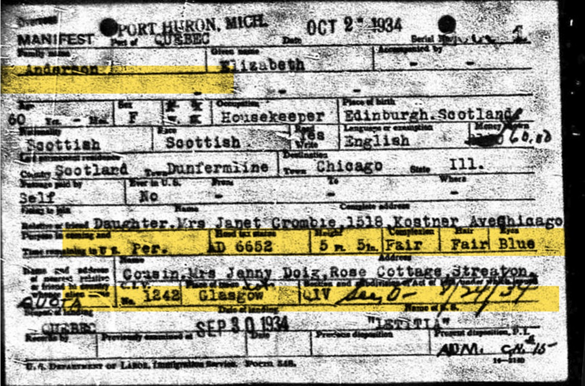
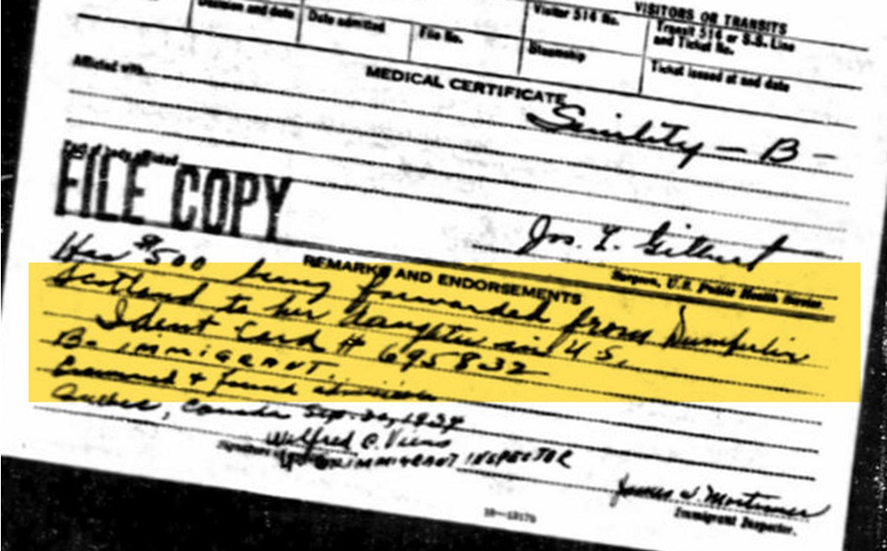

The Names He Carried · The Research
Doug Garceau, comp., “Border crossing card: Elizabeth Anderson, Port Huron,” DOC-041, The Names He Carried: The Research (https://douggarceau.com/the-names-he-carried/archive/items/doc-041.html : accessed [date]); original: U.S. Immigration and Naturalization Service, Forms I-448 and 548, Port Huron, Michigan. M1478, via Ancestry.


This copy carries yellow highlighting or red outlining added for the book site. It is not on the original.
The second image is another side of the same document.
Tap an image to open it full size.
Everything as written, including misspellings. [?] marks an uncertain reading. Struck-through words are marked as struck through. Notes in square brackets describe the page and are not part of it.
[FRONT OF CARD] [Printed] Overseas MANIFEST Port of PORT HURON, MICH. [typed] QUEBEC. Date: OCT 2nd 1934. Serial No.: [handwritten, illegible] Family name: Anderson. Given name: Elizabeth. Accompanied by: – – Age: 60 Yrs. – Mos. Sex: F. [Married/single/widowed box: W marked[?]]. Occupation: Housekeeper. Place of birth: Edinburgh,Scotland Nationality: Scottish. Race: Scottish. Read: Yes. Write: [blank]. Language or exemption: English. Money shown: [handwritten] $60.00 Last permanent residence: Country Scotland. Town Dunfermline. Destination: Town Chicago. State Ill. Passage paid by: Self. Ever in U.S.: No. From: –. To: –. Where: – Going to join (relative or friend): Daughter. Name: Mrs Janet Crombie. Complete address: 1518 Kostner Ave Chicago Purpose in coming and time remaining in U.S.: Per. Head tax status: AD 6652. Height: 5 ft. 5 in. Complexion: Fair. Hair: Fair. Eyes: Blue Name and address of nearest relative or friend in country whence alien came: Cousin,Mrs Jenny Doig[?],Rose Cottage,Strathton[?],[cut off] C.I.V. No.: 1242. Place of issue: Glasgow. Section and subdivision of Act of 1924 under which issued: QIV [handwritten] Sec 6 – 7/24/34[?] Seaport of landing: QUEBEC. Date of landing: SEP 30 1934. Name of S.S.: "LETITIA" Records by: [blank]. Previously examined at: [blank]. Date: [blank]. Previous disposition: [blank]. Present disposition, P.I.: ADM. [handwritten] CH. 15[?] [Printed, bottom] U. S. Department of Labor, Immigration Service. Form 548. 14—2140 [BACK OF CARD] [Printed column headings across the top, partly cut off] ... Date admitted | File No. | Visitor 514 No. | VISITORS OR TRANSITS: Transit 514 or S.S. Line and Ticket No. | Steamship | Ticket issued at and date Affidavit[?] with: [blank] [Printed] MEDICAL CERTIFICATE [handwritten across it] Senility – B – [Stamped, large] FILE COPY [Signature] Jno. T. Gilbert[?] [Printed] Surgeon, U.S. Public Health Service [Printed] REMARKS AND ENDORSEMENTS [Handwritten] Has $500 being forwarded from Dunfermline Scotland to her daughter in U.S. Ident Card # 695832 Q. Immigrant. Examined & found admissible Quebec, Canada Sep. 30, 1934 [Signature] Wilfred C. Viens[?] U.S. Immigrant Inspector [Signature] James W. Mortimer[?] [Printed] Immigrant Inspector. [Printed, bottom] 16—12175[?]